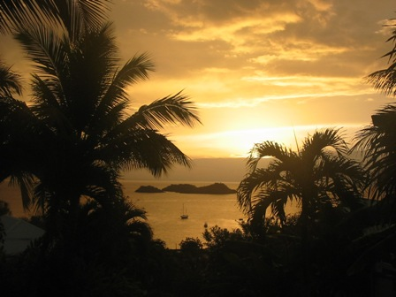

Sylvie et Jean Pierre vous accueillent dans leur gîte pour un hébergement dans leur bungalow en Guadeloupe à Bouillante ainsi que dans leur location d'un appartement de standing. Vous passerez un sejour en Guadeloupe dans un gîte avec des bungalows créoles et vous garderez un souvenir de vacances inoubliables à Bouillante Guadeloupe dans nos bungalows nichés au creux d'un cadre paradisiaque, verdoyant, fleuri avec une des plus belles vues de Guadeloupe sur les îlets Pigeon et la baie de Malendure, un bonheur d'être sur votre terrasse à admirer ce pamorama, dans un quartier calme et résidentiel à des tarifs plus que compétitifs vu son emplacement, sa vue, ses prestations, difficile de trouver moins cher.
Le Plus du Nid Tropical, gite bungalow guadeloupe est sa vue panoramique incomparable en Guadeloupe, nos gites et bungalows sont au centre de toutes les liaisons Nord au Sud de l'île et sa proximité; de tous les commerces.
Le Nid Tropical, un gite bungalow en Guadeloupe à Bouillante, vous propose 6 bungalow s ventilés, 4 bungalow s climatisés, un appartement de standing. Pendant votre séjour en Guadeloupe à Bouillante dans votre bungalow, le gite Nid tropical vous fait profiter de forfaits plongée à des tarifs préférentiels, aux îlets Pigeon, dans la fameuse réserve de Cousteau. Le Nid Tropical gite bungalow Guadeloupe est situé à 800 mètres de leurs partenaires, clubs sympas et sérieux sur la plage de Malendure en Guadeloupe.
Retrouvez votre bungalow Guadeloupe pour partir à l'aventure des randonnées, du canyoning, des visites touristiques, des plages paradisiaques et des paysages exotiques à admirer pendant vos vacances choisissez un séjour en gite bungalow Guadeloupe !
Découvrez nos offres de location dans un gite Guadeloupe, en bungalow créole bois à brasseur d'air avec clim mobile et en bungalow climatisé dans un gîte bungalow hebergement avec piscine à Bouillante Guadeloupe, niché dans un parc exotique avec une vue à vous couper le souffle au dessus de la baie de Malendure, face aux îlets Pigeon de Guadeloupe. Sylvie et Jean Pierre, dans une ambiance conviviale et familiale, vous proposent dans leur gite bungalow Guadeloupe à Bouillante :
Nouveauté hébergement bungalow Guadeloupe! Possibilité d'une 3ème chambre en plus, voir conditions.
Pour votre sécurité, un coffre-fort dans chaque bungalow du gîte et deux coffre-fort dans l'appartement !
Le carbet du nid tropical gite bungalow guadeloupe où nous pouvons accueillir des groupes, pour cela soyez prévoyants pour votre réservation
